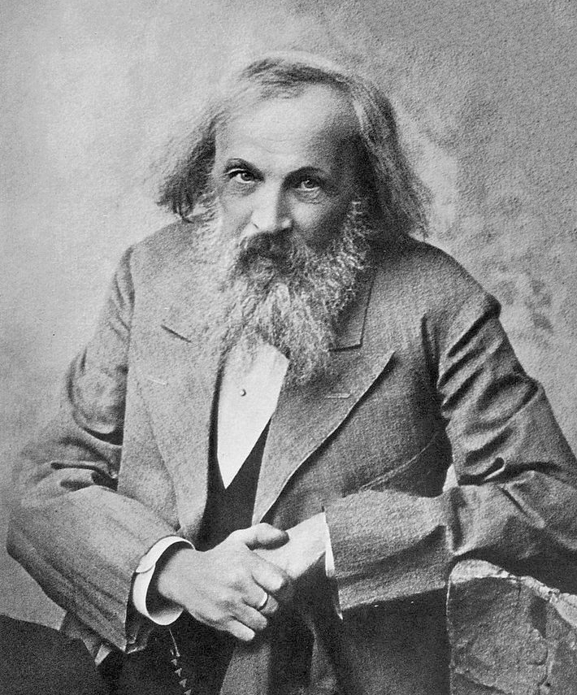

Fysikk 1
Innhold
Atomfysikk
Atomet
- Demokrit foreslår at materien består av små byggesteiner, atomer, rundt 400 f.kr.
- Grekerne valgte istedenfor elementteorien, som sier at alt består av jord, vann, luft og ild
- På 1600-tallet klarer man å vise at vann består av hydrogen og oksygen. Elementteorien må være feil.
Periodesystemet
- Dimitrij (1834-1907) stilte opp grunnstoffene på forskjellige måter
- Egenskapr så ut til å gjentas med en periode på åtte om man rangerte dem etter voksende atommasse
- Mendelejev mente at «hull» i periodene tilhørte grunnstoffer som ennå ikke var funnet
- Dette viste seg å stemme, og vi har nå periodesystemet

Elektronet
- Mot slutten av 1800-tallet var man fremdeles ikke 100 % overbevist av atommodellen. Hvordan var for eksempel et atom bygd opp?
- Man visste en del om elektrisitet, men ikke hvordan det fungerte. Var den kontinuerlig, eller bestod den av partikler?
- Fysikeren Joseph John Thomson fant ut at om spenningen over et glassrør med gass sterk nok, gikk det en strøm gjennom gassen som fikk den til å lyse. Han kunne da endre spenningen og se endringen i strømmen.
- Fra dette fant han at elektrisk strøm bestod av ladde partikler med masse 1/2000 av massen til en hydrogenkjerne.
Kjernemodellen
- I 1911 publiserte Ernest Rutherford sin kjernemodell, som var laget på bakgrunn av «gullfolieeksperimentet».
- Etter først å ha vist at radioaktiv stråling består av minst to typer, alfa- og betastråling, og hva disse er, skjøt han alfastråling mot en gullfolie og så på hvordan spredningen av strålingen ble.
- Spredningen kunne ikke forklares med Thomsons kjernemodell, den måtte forklares med en mer kompakt kjerne, slik vi kjenner atomet i dag.
Kvantehypotesen
Et atom kan bare sende ut eller ta imot energi i bestemte porsjoner eller energikvanter. \[E =h\cdot f\] hvor \(h=6,63\cdot 10^{-34} \textrm{Js}\) er Plancks konstant og \(f\) er strålingens frekvens.
Bohrs atommodell
- Første postulat
- Et atom kan eksistere i mange forskjellige tilstander uten å sende ut energi. I hver tilstand har atomet en bestemt energi. \[E_1, E_2, \ldots, E_n, \quad n\in {1, 2, 3, \ldots}\]
- Andre postulat
- Et atom kan gå fra én tilstand med energien \(E_n\) til en annen tilstand med lavere energi \(E_m\). Ved overgangen blir energiforskjellen sendt ut som et foton med energien \[hf = E_n - E_m, \quad n>m,\] der \(h\) er Plancks konstant og \(f\) er strålingsfrekvensen.